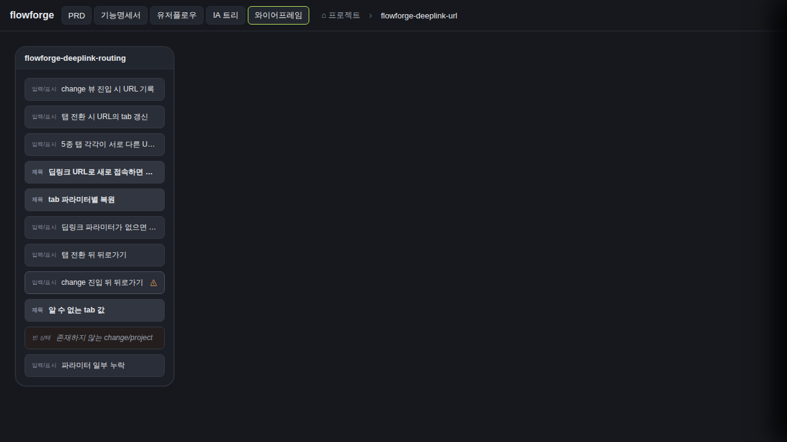
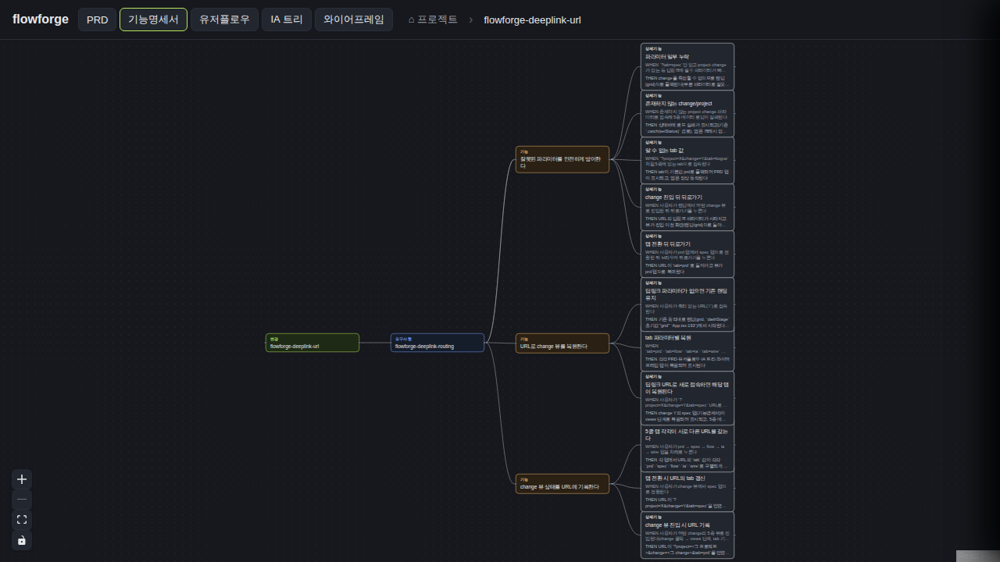
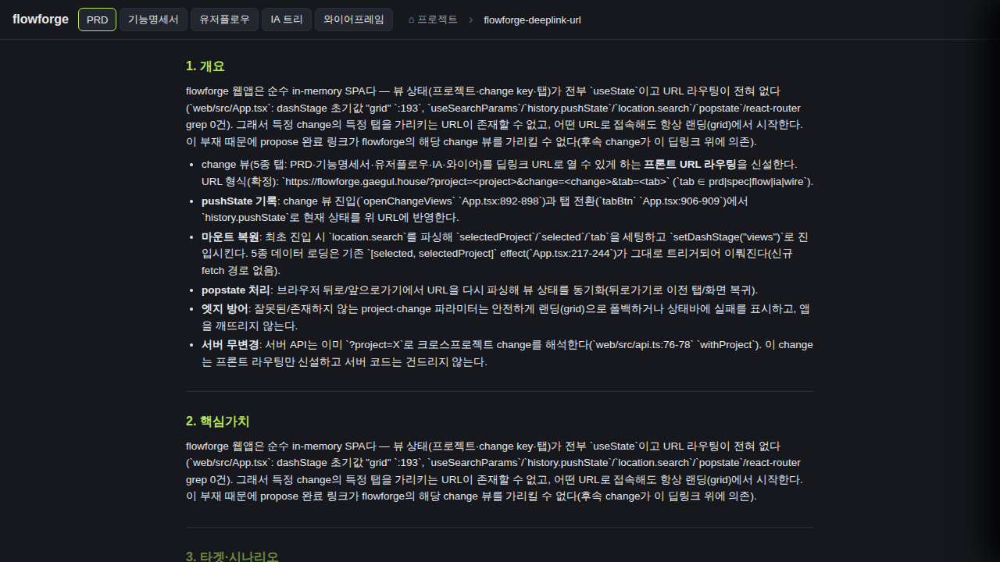
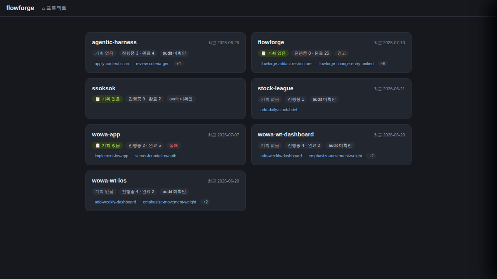
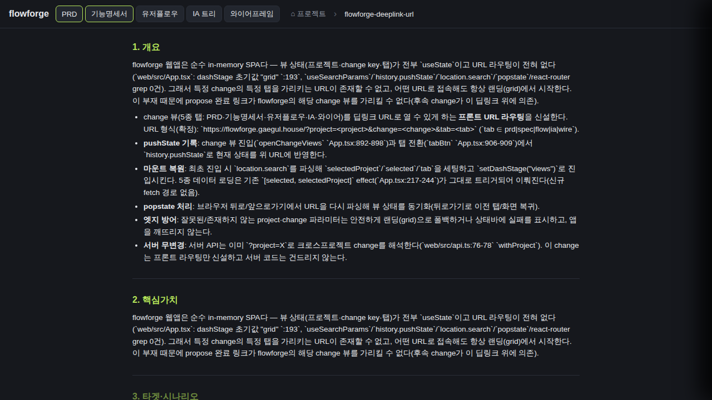
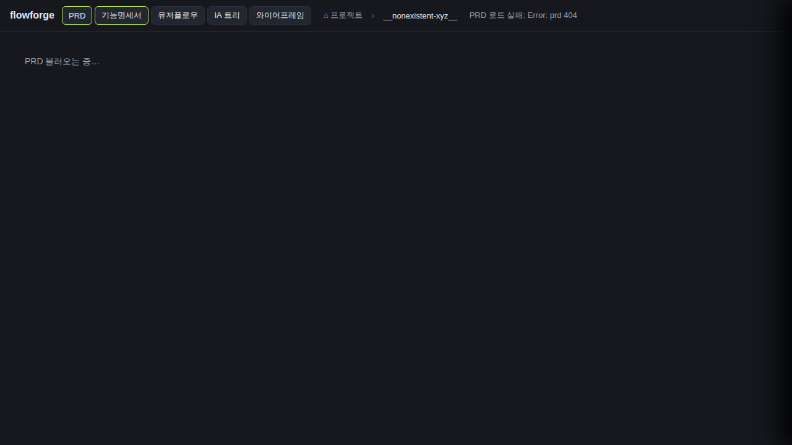

코드 존재 확인(App.tsx:931-936, tab=prd, serializeDeepLink+pushState). 단 이 라이브 배포에서 capChanges→CapabilityChangeList 진입점(.dash-cap)이 렌더되지 않아 UI 클릭으로 도달 불가 — WHEN(change 클릭 진입) 미실행.capChanges 진입은 openCapability(.dash-cap 버튼, App.tsx:1214)로만 도달하나 이 버튼은 planTabsAvail.length===0(기획문서 없는 프로젝트)에서만 렌더(App.tsx:1205). 라이브에서 capabilities>0인 프로젝트(flowforge 24개, wowa-app 11개)는 전부 기획문서를 가져 planning 그래프를 띄우므로 .dash-cap 미렌더. flowforge 기획 그래프의 feature 노드 클릭은 FeatureDetailPanel(App.tsx:1297, onOpenChange 프롭 없음)만 열려 change 뷰로 못 감. → openChangeViews의 pushState(site1)를 UI로 트리거 불가. 코드는 App.tsx:931-936에 존재하고, 동일 serialize+pushState 기계는 S1.2/S1.3(site3)로 라이브 입증됨.
App.tsx:957-961 pushState(serializeDeepLink); history.length 17→18 증가 관찰{kind=link}
각 클릭이 distinct tab= URL 생성 + history.length 17→18→19→20→21 (클릭당 +1 pushState){kind=link}

마운트 복원 useEffect(App.tsx:250-257) → dashStage=views, spec tab aria-pressed=true, change 키 페이지 표시, 콘솔 에러 0{kind=link}

각 딥링크 fresh load에서 해당 tab aria-pressed=true, 5탭 모두 렌더, views 단계(grid 아님){kind=link}

parseDeepLink→null(deeplink.ts:36) → 마운트 복원 early return(App.tsx:252) → grid 유지; tab 버튼 없음, .pg-card 존재{kind=link}

popstate 리스너(App.tsx:262-268) 재동기화 → back 후 URL tab=prd, prd aria-pressed=true, spec=false, views 유지{kind=link}
popstate else 분기(App.tsx:269-270 setDashStage('grid')) → back 후 location.search='', tab 버튼 없음, .pg-card 존재
isTab 실패→DEFAULT_TAB prd(deeplink.ts:38) → 활성 탭 tab-prd, views 정상, 크래시 없음(유효 prd 로드와 비교해 404 회귀 아님){kind=link}

.catch(setStatus) 경로 → 상태바 'PRD 로드 실패: Error: prd 404' 표시, 5탭 버튼 렌더, 화이트스크린 없음, 앱 responsive{kind=link}

parseDeepLink: project||change 없으면 null(deeplink.ts:36) → 랜딩; tab 버튼 없음, .pg-card 존재(잘못된 뷰 안 엶)